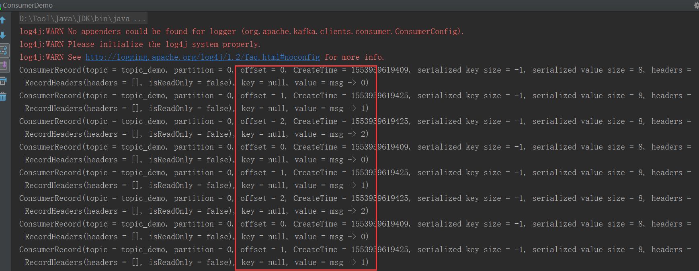

Consumer liveness检测机制；Consumer livelock介绍和规避策略
我们都知道能够触发Rebalance的原因有很多，其中就包括Group中新增或者移除Consumer Client。除去客户端主动断开连接会通知Coordinator执行Client的移除操作外，Kafka本身提供了多种机制来检测Consumer liveness（Consumer的消费能力/Consumer的活跃度）。
熟悉的有session.timeout.ms和heartbeat.interval.ms。 前者表示Broker在未收到心跳的前提下所能容忍的最大时间间隔；后者表示Consumer Client向Coordinator发送心跳的频率。就笔者的个人使用经验而言，这两个参数对于判定Consumer是否有效的作用在实际应用中表现的并不那么的直接和明显；相反用这两个参数可以适当的控制Rebalance的频率。
因为新版本的Kafka中有一个专门的心跳线程来实现发送心跳的动作，所以存在Consumer Client依旧可以有效的发送心跳，但Consumer实际却处于livelock(活锁)状态，从而导致无法有效的进行数据处理，所以基于此Kafka通过参数max.poll.interval.ms来规避该问题，
接下来结合一个实际的案例来介绍另外两个参数
max.poll.interval.ms：前后两次调用poll方法的最大时间间隔；如果调用时间间隔大于该参数，则Kafka会认为该Consumer已经失败，于是会触发Rebalance；默认值为300000ms(5分钟)
max.poll.records：每执行一次poll方法所拉去的最大数据量；是基于所分配的所有Partition而言的数据总和，而非每个Partition上拉去的最大数据量；默认值为500
光看这两个参数可能没有什么太感觉，接下来结合代码来理解这两个参数
1 2 3 4 5 6 7 8 9 10 11 12 13 14 15 16 17 18 19 20 21 22 public static void main (String[] args) String brokers = "localhost:9092" ; String group = "demo_group" ; String topic = "demo_topic" ; Properties props = new Properties(); props.put("bootstrap.servers" , brokers); props.put("group.id" , group); props.put("enable.auto.commit" , "true" ); props.put("key.deserializer" , "org.apache.kafka.common.serialization.ByteArrayDeserializer" ); props.put("value.deserializer" , "org.apache.kafka.common.serialization.ByteArrayDeserializer" ); KafkaConsumer<byte [], byte []> consumer = new KafkaConsumer<>(props); consumer.subscribe(Collections.singletonList(topic)); while (true ) { ConsumerRecords<byte [], byte []> records = consumer.poll(100 ); for (ConsumerRecord<byte [], byte []> record : records) { System.out.println(record.toString()); } } }
上述的代码参数均采用默认的配置，所以意味着在while循环中，每执行一次poll方法，最多可以拉去到500条数据(假设堆积的数据量足够大)。然后依次处理这500条数据(假设当前拉去的数据量就是500)，因为默认采用的auto commit的方式，所以当依次处理完这五百条数据后，Kafka会自动提交最后一条消息的offset，并接着调用poll方法。代码逻辑很简单，但是此时需要回头看一下参数max.poll.interval.ms的含义，代表调用两次poll方法的最大时间间隔。因为这里直接是打印消息体，所以在五分钟内是绝对可以处理完的；设想一下500条消息，如果每条消息的处理时长为1秒钟，则处理完全部消息所花费的时间就远大于五分钟，所以实际上没等所有消息消费完，该Group已经Rebalance了，当该Consumer消费完此次poll下的所有数据后执行commit offset时会因为Group的Rebalance而无法提交，紧接着会从上一次消费的offset处开始重复消费。
好记性不如烂笔头，接下来实际验证一下：在不修改max.poll.interval.ms的前提下，为了突出验证结果，将每次poll的最大数据量修改为3：props.put("max.poll.records", 3)，与此同时，在打印消息内容后将线程挂起两分钟（保证处理所有数据量的总用时大于五分钟），验证结果如下所示：



 Home
Archives
Tags
About
Search
Home
Archives
Tags
About
Search